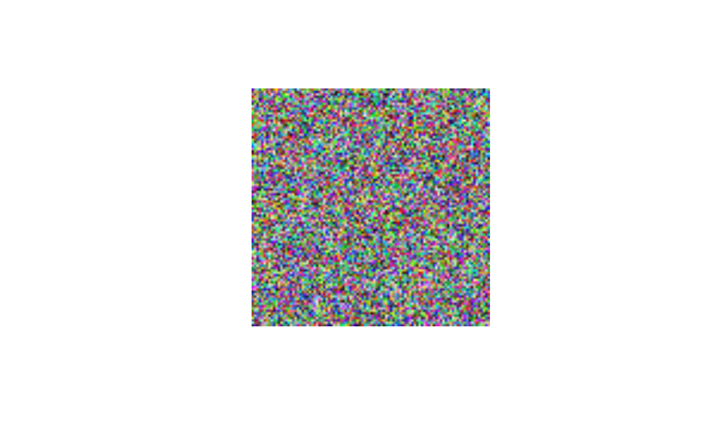

Does what it says on the tin. An extremely simple wrapper for
graphics::rasterImage(), but maintains aspect ratio, removes
axes, and reduces margins for cleaner plotting.
Arguments
- rgb_array
A 3D array of RGB values. Preferably output from
png::readPNG(),jpeg::readJPEG(), recoloredImage, constructImage, or raster_to_array.- main
Optional title for plot.
- ...
Parameters passed to graphics::plot.
Examples
# make a 100x100 image of random colors
random_colors <- array(runif(100 * 100 * 3),
dim = c(100, 100, 3))
recolorize::plotImageArray(random_colors)

# we can also plot...a real image
corbetti <- system.file("extdata/corbetti.png",
package = "recolorize")
img <- png::readPNG(corbetti)
plotImageArray(img)